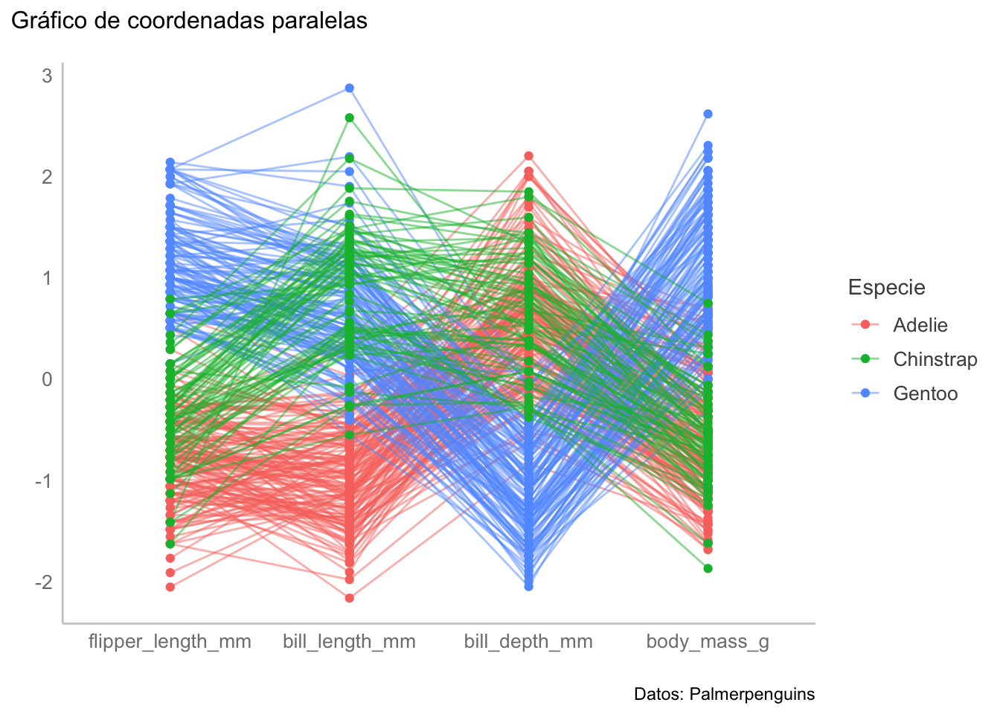

library(ggplot2)
library(palmerpenguins)
library(dplyr)
# library(Hotelling)
# library(GridExtra)
library(GGally)
library(vegan)
library(pairwiseAdonis)16 Hipótesis Multivariadas
16.1 Librerías
16.2 Introducción
Vamos a dejar por un momento el tema del aprendizaje automatizado para hablar sobre pruebas de significancia multivariadas, pero es necesario que antes retomemos un tema que dejé pendiente en la Capítulo 10: el problema de las múltiples hipótesis.
16.3 Controlando el error
Hasta antes de esta sección de multivariado habíamos abordado problemas en donde respondíamos preguntas individuales a nuestros datos, principalmente en términos de pruebas de significancia; sin embargo, en el Capítulo 10 vimos que había que utilizar un ANOVA seguido de una prueba post-hoc al comparar las medias una variable numérica entre más de dos dos grupos para evitar inflar nuestro valor de \(\alpha\), pero no entramos en más detalles.
¿Qué pasa cuando contrastamos simultáneamente más de una hipótesis? Conforme incrementamos la cantidad de preguntas incrementamos la probabilidad de obtener respuestas incorrectas. ¿Por qué? Porque tenemos un error por cada tipo de pregunta. Esto hace que sea necesario corregir de alguna manera para que la tasa de error a nivel de la familia (Family-wise Error Rate) se mantenga constante. es decir que nuestro valor de \(\alpha\) represente la probabilidad de que tengamos al menos un error de tipo I.
Esta probabilidad de encontrar al menos un falso positivo al realizar múltiples comparaciones independientes incrementa a una tasa de \(1-(1-\alpha)^m\), donde \(m\) es el número de comparaciones que estamos realizando (King & Eckersley, 2019):
error <- data.frame(m = 1:20)
error["P_alpha"] <- 1 - (1-0.05)^error$m
error_rate <- ggplot(data = error, aes(m, P_alpha)) +
geom_line(color = rgb(118,78,144, maxColorValue = 255)) +
scale_y_continuous(breaks = NULL) +
scale_x_continuous(breaks = c(1, 2, 5, 10, 20)) +
expand_limits(y = c(0,1)) +
theme_bw() +
geom_hline(yintercept = 0.05,
colour = "deepskyblue4", linetype = "dashed") +
geom_hline(yintercept = 0.5,
colour = "firebrick", linetype = "dashed",
alpha = 0.5) +
geom_hline(yintercept = 1,
colour = "firebrick", linetype = "dashed",
alpha = 0.5) +
annotate("text", x = 0, y = 0.08,
label = "0.05", colour = "deepskyblue4",
alpha = 0.5) +
annotate("text", x = 0, y = 0.53,
label = "0.5", colour = "firebrick",
alpha = 0.5) +
annotate("text", x = 0, y = 0.97,
label = "1", colour = "firebrick",
alpha = 0.5) +
labs(title = "P(error) al incrementar el número de pruebas (m)",
subtitle = bquote({1 - (1- alpha)^m}),
x = element_blank(),
y = element_blank(),
caption = "King & Eckersley (2019)"
)
error_rate
Notarás que con \(m = 10\) ya nos acercamos peligrosamente a tener un 50% de probabilidad de encontrarnos al menos un falso positivo. Creo que estarás conmigo que eso es una apuesta bastante arriesgada cuando originalmente pensabas que la probabilidad era del 5%.
Imagina que estamos contratados en una farmacéutica como científicos de datos, y que nuestra jefa nos da la tarea de hacer los ensayos clínicos para un nuevo medicamento diseñado para incrementar la fuerza de voluntad de los estudiantes para aprender estadística. Nosotros vamos y llegamos a la conclusión de que el medicamento no tuvo un efecto sobre ese atributo en particular. Evidentemente ni a la jefa ni a sus superiores les agrada la noticia, por lo que deciden explotarnos laboralmente y hacer un ensayo clínico en el que probemos otras 1000 cosas (reducir la ansiedad, mejorar la memoria, etc.), y nos piden que utilicemos el mismo valor de \(\alpha\) de antes: 0.05. Como empleados responsables que quieren evitar un despido nosotros hacemos el colosal ensayo, y encontramos la siguiente distribución de efectos:
set.seed(45)
n <- 1000
robs <- data.frame(z = rnorm(n))
robs["color"] <- ifelse(robs$z < -1.96 | robs$z > 1.96,
"firebrick", "deepskyblue4")
robs_plot <- ggplot(data = robs, aes(z)) +
geom_density(color = "deepskyblue4") +
theme_bw() +
labs(title =
"Observaciones aleatorias a un alpha de 0.05",
subtitle = "Bandas indican límites del LS ",
caption = paste(n, " datos simulados"),
x = "Z",
y = element_blank()
) +
geom_vline(xintercept = -1.96,
colour = rgb(118,78,144, maxColorValue = 255),
linetype = "dashed"
) +
geom_vline(xintercept = 1.96,
colour = rgb(118,78,144, maxColorValue = 255),
linetype = "dashed"
) +
geom_point(aes(x = z, y = 0),
color = robs$color, alpha = 0.3) +
scale_y_continuous(breaks = NULL) +
scale_x_continuous(breaks = c(-3, -1.96, -1, 0, 1, 1.96, 3),
labels =
as.character(c(-3, -1.96, -1, 0, 1, 1.96, 3))
) +
annotate("text", x = 3, y = 0.5,
label = paste("# sign = ",
length(robs$color[robs$color ==
"firebrick"]),
"/", n),
colour = "firebrick"
)
robs_plot¡Tuvimos un efecto significativo en 58! Hacemos el reporte correspondiente a nuestra jefa e inmediatamente la empresa se dispone a vender el producto. ¿Te hace algún tipo de ruido ese valor de 58/1000? Es sospechosamente cercano a nuestra probabilidad de \(\alpha\) de 0.05, ¿no? Eso quiere decir que cuando menos una parte de esos efectos significativos son productos del azar. ¿La consecuencia de haber hecho así el análisis? La empresa fue demandada por publicidad engañosa porque el medicamento no cumplió con lo prometido.
¿Cómo podíamos haber evitado la avalancha de demandas? Hay una alternativa sumamente sencilla: la corrección de Bonferroni. Lo único que teníamos que hacer era dividir nuestro valor de \(\alpha\) nominal (con el que estamos trabajando) entre el número de contrastes a realizar. El resultado es que la tasa de error se vuelve prácticamente constante:
error["P_bonf"] <- 1 - (1-(0.05/error$m))^error$m
error_corr <- ggplot(data = error, aes(m, P_bonf)) +
geom_line(color = rgb(118,78,144, maxColorValue = 255)) +
scale_y_continuous(breaks = NULL) +
scale_x_continuous(breaks = c(1, 2, 5, 10, 20)) +
expand_limits(y = c(0.04, 0.06)) +
theme_bw() +
geom_hline(yintercept = 0.05,
colour = "deepskyblue4", linetype = "dashed") +
geom_hline(yintercept = 0.04,
colour = "lightslategray", linetype = "dashed",
alpha = 0.5) +
geom_hline(yintercept = 0.06,
colour = "lightslategray", linetype = "dashed",
alpha = 0.5) +
annotate("text", x = 0, y = 0.0505,
label = "0.05", colour = "deepskyblue4",
alpha = 0.5) +
annotate("text", x = 0, y = 0.0405,
label = "0.04", colour = "lightslategray",
alpha = 0.5) +
annotate("text", x = 0, y = 0.0595,
label = "0.06",colour = "lightslategray",
alpha = 0.5) +
labs(title = "P(error) al corregir según el número de pruebas (m)",
subtitle = bquote({1 - (1- (alpha/m))^m}),
x = element_blank(),
y = element_blank(),
caption = "King & Eckersley (2019)"
)
error_corrApliquemos entonces esta simple corrección a nuestro ensayo clínico y veamos cómo se distribuyen nuestros efectos:
n <- 1000
a_corr <- (0.05/n)/2
sig_lev <- abs(qnorm(a_corr))
robs <- data.frame(z = rnorm(n))
robs["color"] <- ifelse(robs$z < -sig_lev | robs$z > sig_lev,
"firebrick", "deepskyblue4")
rcor_plot <- ggplot(data = robs, aes(z)) +
geom_density(color = "deepskyblue4") +
theme_bw() +
labs(title = "Observaciones aleatorias a un alpha de 0.05",
subtitle = "Bandas indican límites del LS corregido",
caption = paste(n, " datos simulados"),
x = "Z",
y = element_blank()
) +
geom_vline(xintercept = -sig_lev,
colour = rgb(118,78,144, maxColorValue = 255),
linetype = "dashed"
) +
geom_vline(xintercept = sig_lev,
colour = rgb(118,78,144, maxColorValue = 255),
linetype = "dashed"
) +
geom_point(aes(x = z, y = 0),
color = robs$color, alpha = 0.3) +
scale_y_continuous(breaks = NULL) +
scale_x_continuous(breaks = c(-3, -1.96, -1, 0, 1, 1.96, 3),
labels =
as.character(c(-3, -1.96, -1, 0, 1, 1.96, 3))
) +
annotate("text", x = 2.5, y = 0.5,
label = paste("# sign = ",
length(robs$color[robs$color ==
"firebrick"]),
"/", n),
colour = "firebrick"
)
rcor_plot
Ahora no tuvimos ningún efecto significativo. Básicamente le dimos un placebo a todos nuestros sujetos experimentales. Vamos con nuestra jefa, le damos el reporte correspondiente, se pone furiosa porque la empresa perdió dinero y le va a tocar una llamada de atención, pero preferible eso a tener pérdidas millonarias derivadas de la fabricación en masa de un producto que no sirve, y la subsecuente lluvia de demandas.
¿Eso quiere decir que siempre vamos a utilizar una corrección de Bonferroni? Como mucho en esta vida, depende. ¿De qué? De la respuesta que demos a la misma pregunta que deberíamos de hacernos al seleccionar un valor de \(\alpha\): ¿Qué prefiero sea más probable, un falso positivo o un falso negativo? A final de cuentas, si disminuímos la probabilidad de tener falsos positivos, por lógica incrementamos la probabilidad de tener falsos negativos. ¿La razón? Nos estamos haciendo más conservadores y, de hecho, esa es una de las principales críticas (Perneger, 1998) a la corrección de Bonferroni, que es muy conservadora e incrementa \(\beta\). Hay otra crítica un poco más filosófica que tiene que ver con la pregunta de si cambia la interpretación de UNA prueba porque se hicieron otras 999, pero no entraremos en esos detalles.
Ahora sí, podemos seguir con las pruebas multivariadas.
16.4 \(T^2\) de Hotelling
Hasta el momento hemos visto que los análisis multivariados son abstractos. Podemos, sin ningún problema visualizar una distribución normal bivariada, solo hay que graficar una variable contra la otra (Figura 16.1), ¿pero con veinte variables? Nuestra imaginación de seres tridimensionales no llega hasta allá.
La solución es hacer una prueba multivariada (para mantener nuestro error controlado), y acompañarla de pruebas univariadas. La primera de estas prueba es la prueba \(T^2\) de Hotelling, que es una generalización multivariada de la prueba \(t\) de Student. Como tal, es una prueba paramétrica, por lo que existen los supuestos de normalidad multivariada y de igualdad de matrices de covarianza (en el Capítulo 14 ya revisamos esos temas, así que obviaré el procedimiento). Las ecuaciones son una adaptación de la prueba \(t\) hacia el espacio multivariado, pasando de trabajar con una o dos medias a trabajar con uno o dos vectores de medias:
- Para una muestra o muestras pareadas:
\[\begin{align*} T^2 = n(\bar{x}- \mu)^TC^{-1}(\bar{x}-\mu) \\ C = \frac{1}{n-1}\sum_{i=1}^n{(x_i-\bar{x})(x_i-\bar{x})^T} \\ \nu = p, n-p \end{align*}\]
- Para dos muestras independientes
\[\begin{align*} T^2 = n(\bar{x_1}- \bar{x_2})^TC^{-1}(\bar{x_1}- \bar{x_2}) \\ C = \frac{(n_1 - 1)C_1 + (n_2-1)C_2} {n_1 + n_2 - 2} \\ \nu = p, n_1 + n_2 - p - 1 \end{align*}\]
El estadístico de prueba sigue una distribución \(F\) de Fisher, como en el ANOVA:
\[ F = \frac{n - p}{p(n-1)}T^2 \]
Nota
El objetivo de mostrar las ecuaciones no es que te las aprendas, solo que veas la lógica detrás de las “generalizaciones” que vamos a ver más adelante.
16.4.1 Implementación en R
Para todas las pruebas que revisaremos el día de hoy vamos a utilizar los datos de palmerpenguins que utilizamos para los gráficos del Capítulo 8, por lo que vamos a filtrar la base penguins para quedarnos solo con las variables numéricas sobre peso o longitud. Tiene mucho que no vemos algo de tidyverse, así que pongámoslo en práctica:
num_data <- penguins |>
select(contains(c("mm", "g", "species"))) |>
na.omit()
head(num_data)La prueba la aplicaremos con la función Hoteling::hotelling.test(x, y), donde \(x\) y \(y\) son las matrices de datos de cada grupo.
x <- num_data |> filter(species == "Adelie") |> select(where(is.numeric))
y <- num_data |> filter(species == "Gentoo") |> select(where(is.numeric))
hot_t2 <- Hotelling::hotelling.test(x = x, y = y)
hot_t2Test stat: 4586.7
Numerator df: 4
Denominator df: 269
P-value: 0
Advertencia
La función hotelling.test puede recibir una fórmula, pero hay un error y tanto el estadístico de prueba como el valor de p resultan en NaN (“Not a Number).
Advertencia
El valor de p no es exactamente 0, solo es extremadamente pequeño (del orden \(\times10^{-16}\) o aún más pequeño) y la función lo muestra como 0.
Tip
¿Cómo diferenciar entre dónde utilizar filter y dónde select? filter extrae renglones, mientras que select extrae columnas.
Si la distribución del estadístico de prueba es la distribución \(F\), entonces los resultados se interpretan como los resultados de un ANOVA: Hay diferencias en al menos una de las medias (\(F_{4,269} = 4586.7; p < 0.0001\)).
16.4.1.1 Comparaciones univariadas
Realizaremos 4 comparaciones univariadas. ¿tiene sentido aplicar una corrección de Bonferroni?
# Formamos un objeto para la aplicación de la prueba t
t2_data <- num_data |>
filter(species == "Adelie" | species == "Gentoo")
# Prueba t para lcada variable
t.test(bill_length_mm~species, data = t2_data)
Welch Two Sample t-test
data: bill_length_mm by species
t = -24.725, df = 242.58, p-value < 2.2e-16
alternative hypothesis: true difference in means between group Adelie and group Gentoo is not equal to 0
95 percent confidence interval:
-9.407672 -8.019303
sample estimates:
mean in group Adelie mean in group Gentoo
38.79139 47.50488 t.test(bill_depth_mm~species, data = t2_data)
Welch Two Sample t-test
data: bill_depth_mm by species
t = 25.337, df = 271.98, p-value < 2.2e-16
alternative hypothesis: true difference in means between group Adelie and group Gentoo is not equal to 0
95 percent confidence interval:
3.102837 3.625651
sample estimates:
mean in group Adelie mean in group Gentoo
18.34636 14.98211 t.test(flipper_length_mm~species, data = t2_data)
Welch Two Sample t-test
data: flipper_length_mm by species
t = -34.445, df = 261.75, p-value < 2.2e-16
alternative hypothesis: true difference in means between group Adelie and group Gentoo is not equal to 0
95 percent confidence interval:
-28.79018 -25.67652
sample estimates:
mean in group Adelie mean in group Gentoo
189.9536 217.1870 t.test(body_mass_g~species, data = t2_data)
Welch Two Sample t-test
data: body_mass_g by species
t = -23.386, df = 249.64, p-value < 2.2e-16
alternative hypothesis: true difference in means between group Adelie and group Gentoo is not equal to 0
95 percent confidence interval:
-1491.183 -1259.525
sample estimates:
mean in group Adelie mean in group Gentoo
3700.662 5076.016 En todos los casos rechazamos la hipótesis de nulidad (\(p < 0.0001\)), lo cual no es de sorprender: los pingüinos Adelie son más pequeños que los Gentoo (aunque sorprende el resultado de la profundidad del pico). Aquí normalmente haríamos un gráfico de acompañamiento, pero mejor escalemos al caso para más de dos grupos.
16.5 Análisis Multivariado de la Varianza
Es, como te imaginarás, una extensión multivariada del ANOVA factorial. Aquí ya no entraré en los detalles de la prueba, pues vimos los fundamentos del ANOVA en el Capítulo 10, y cómo comprobar los supuestos básicos en Capítulo 14. Solo es importante conocer que se puede realizar con diversos estadísticos de prueba, entre los que destacan
- La traza de Pillai: Contenida en el intervalo \([0,1]\), donde valores cercanos a 1 sugieren diferencias en al menos uno de los grupos en el espacio multivariado. Este es el estadístico más robusto a la violación de los supuestos del MANOVA (normalidad multivariada y homogeneidad de las matrices de covarianza).
- La \(\lambda\) de Wilk. También contenida en el intervalo \([0,1]\), aunque aquí son los valores más cercanos a 0 los que sugieren las diferencias. Si se cumplen todos los supuestos, esta es la prueba más relacionada con el criterio de la razón de verosimilitud (más sobre esto en Capítulo 19).
Y que el procedimiento \(post-hoc\) tiene dos pasos:
- Un ANOVA por cada variable dependiente.
- Una prueba HSD de Tukey en los ANOVAs significativos.
16.5.1 Implementación
La implementación de la prueba en R tiene un paso muy engorroso, especialmente en casos con muchísimas variables: hay que seleccionar manualmente las columnas con las variables dependientes y unirlas con la función cbind. Podemos aplicar la prueba con la función car::Manova, la cual recibe un modelo ajustado con la función lm:
manova_model <- lm(cbind(bill_length_mm,
bill_depth_mm,
flipper_length_mm,
body_mass_g)~species,
data = penguins)
car::Manova(manova_model, test.statistic = "Wilks")
Type II MANOVA Tests: Wilks test statistic
Df test stat approx F num Df den Df Pr(>F)
species 2 0.018785 528.87 8 672 < 2.2e-16 ***
---
Signif. codes: 0 '***' 0.001 '**' 0.01 '*' 0.05 '.' 0.1 ' ' 1O también con la función manova de R base:
res_manova <- manova(cbind(bill_length_mm,
bill_depth_mm,
flipper_length_mm,
body_mass_g)~species,
data = penguins)
summary(res_manova) Df Pillai approx F num Df den Df Pr(>F)
species 2 1.6366 379.49 8 674 < 2.2e-16 ***
Residuals 339
---
Signif. codes: 0 '***' 0.001 '**' 0.01 '*' 0.05 '.' 0.1 ' ' 1Posteriormente podemos utilizar este objeto para realizar un ANOVA por variable. Nuevamente, ¿es necesario corregir los valores de p?
summary.aov(res_manova) Response bill_length_mm :
Df Sum Sq Mean Sq F value Pr(>F)
species 2 7194.3 3597.2 410.6 < 2.2e-16 ***
Residuals 339 2969.9 8.8
---
Signif. codes: 0 '***' 0.001 '**' 0.01 '*' 0.05 '.' 0.1 ' ' 1
Response bill_depth_mm :
Df Sum Sq Mean Sq F value Pr(>F)
species 2 903.97 451.98 359.79 < 2.2e-16 ***
Residuals 339 425.87 1.26
---
Signif. codes: 0 '***' 0.001 '**' 0.01 '*' 0.05 '.' 0.1 ' ' 1
Response flipper_length_mm :
Df Sum Sq Mean Sq F value Pr(>F)
species 2 52473 26236.6 594.8 < 2.2e-16 ***
Residuals 339 14953 44.1
---
Signif. codes: 0 '***' 0.001 '**' 0.01 '*' 0.05 '.' 0.1 ' ' 1
Response body_mass_g :
Df Sum Sq Mean Sq F value Pr(>F)
species 2 146864214 73432107 343.63 < 2.2e-16 ***
Residuals 339 72443483 213698
---
Signif. codes: 0 '***' 0.001 '**' 0.01 '*' 0.05 '.' 0.1 ' ' 1
2 observations deleted due to missingnessY por último aplicamos una prueba post-hoc HSD de Tukey para cada variable (solo con la primera por simplicidad):
TukeyHSD(aov(bill_length_mm~species, data = num_data)) Tukey multiple comparisons of means
95% family-wise confidence level
Fit: aov(formula = bill_length_mm ~ species, data = num_data)
$species
diff lwr upr p adj
Chinstrap-Adelie 10.042433 9.024859 11.0600064 0.0000000
Gentoo-Adelie 8.713487 7.867194 9.5597807 0.0000000
Gentoo-Chinstrap -1.328945 -2.381868 -0.2760231 0.0088993Ahora sí, podemos construir un gráfico de acompañamiento. Podemos construir un gráfico de interacción para cada variable. Hacerlo a mano puede resultar extremadamente tedioso, así que hagámoslos con un ciclo for. Primero, creemos objetos con la información básica que vamos a necesitar: los nombres de las variables, una lista vacía para llenar, y un espacio gráfico con los elementos que se reutilizan en todos los casos para evitar repeticiones.
# Nombres de las variables
var_names <- colnames(num_data)[colnames(num_data)!="species"]
# Lista vacía
plot_list <- list()
# Inicializamos el espacio gráfico base
base_plot <- ggplot(data = num_data,
aes(x = species,
colour = species)) +
theme_bw() Luego aplicamos el ciclo for. Como en este caso tenemos los nombres de columnas en un vector de cadenas de caracter necesitamos de dos pasos: convertir la cadena de caracteres a un símboo con la función sym() y luego quitarle las comillas con el operador !! dentro de aes:
# Para cada variable:
for (variable in var_names){
plot_var <- sym(variable)
plot_list[[variable]] <- base_plot +
geom_violin(aes(y = !!plot_var),
show.legend = F) +
geom_boxplot(aes(y = !!plot_var),
width = 0.1,
show.legend = F) +
labs(x = element_blank(),
y = element_blank(),
title = variable)
}Luego podemos graficarlas todas juntas con la función GridExtra::grid.arrange(), solo que hay que “forzarla” utilizando la función do.call(FUN, args) para evitar un error:
do.call(gridExtra::grid.arrange, args = plot_list)
Otra forma sería con facet_wrap, tratando las variables como si fueran variables de agrupamiento (¿te animas a programarlo?), pero otra manera, tal vez más sencilla de representar toda esta información en un solo panel es un gráfico de coordenadas paralelas:
parcoord_plot <- ggparcoord(data = num_data,
columns = 1:4,
groupColumn = 5,
showPoints = TRUE,
scale = "std",
order = "anyClass",
alphaLines = 0.5) +
theme_bw() +
labs(title = "Gráfico de coordenadas paralelas",
subtitle = "Valores estandarizados",
y = element_blank(),
x = element_blank(),
caption = "Datos: Iris") +
scale_color_discrete(name = "Especie")
parcoord_plot16.6 Análisis Permutacional Multivariado de la Varianza
Vamos a cerrar este capítulo con la alternativa no paramétrica al MANOVA: el Análisis Permutacional Multivariado de la Varianza (MANOVA). En este análisis se hace una partición geométrica del espacio multivariado; es decir, es una prueba basada en distancias. Además, es una prueba basada en un análisis permutacional, donde “revuelve” las etiquetas de la matriz de distancias.
Nota
Te recomiendo visitar este sitio web para que te familiarices con los análisis permutacionales de una manera visual.
La prueba trabaja en tres pasos:
Calcula un valor de \(F = \frac{SS_A}{SS_R}\cdot \left[\frac{N-g}{g-1} \right]\) para el acomodo original de los datos.
Permuta las etiquetas de la matriz de distancias \(k\) veces, calculando un valor de \(F\) para cada permutación. Esto permite “crear” una distribución empírica con todas las \(F\).
Calcula el valor de p comparando la F observada vs. la distribución “creada”.
Debido a la naturaleza permutacional del análisis es muy importante que tengamos factores balanceados; i.e., que todos los factores tengan aproximadamente la misma cantidad de observaciones. La función que utilizaremos (adonis2) compensa esta parte, pero tampoco hay que abusar, y esto me lleva a la implementación.
16.6.1 Implementación
Lo primero, evidentemente, es calcular la matriz de distancias pero, al igual que con el análisis clúster, es importante que todas nuestras variables estén en la misma escala:
# Escalado de los datos
scaled_data <- as.data.frame(scale(num_data[,1:4]))
# Objeto con los niveles de agrupamiento, anidados o no
species <- num_data$species
# Cálculo de la matriz de distancias
dist_mat <- dist(scaled_data,
method = "euclidean")Luego aplicamos el PERMANOVA
perm_res <- adonis2(dist_mat~species,
data = scaled_data,
permutations = 999)
perm_resRechazamos la hipótesis de nulidad, y aprendimos que hay diferencias entre las medias multivariadas de al menos un par de especies. El gráfico de acompañamiento para esta prueba es el resultado de un análisis de coordenadas principales (un PCA, pero con cualquier medida de distancia, no solo Euclidiana), o un NMDS. Dado que el análisis lo hicimos con una matriz de distancias euclidianas podemos también hacer un gráfico de PCA:
dist_pca <- FactoMineR::PCA(scaled_data,
graph = F,
ncp = length(num_data),
scale.unit = F)
factoextra::fviz_pca_ind(dist_pca,
geom.ind = "point",
col.ind = species,
addEllipses = T,
palette = c("#00AFBB", "#E7B800", "#FC4E07"),
legend.title = "Especies")
Como era de esperarse hubo diferencias muy marcadas, principalmente en los pingüinos Gentoo pero ¿en qué variables? No existe una prueba post-hoc como tal para el PERMANOVA, pero podemos hacer un PERMANOVA para cada par de especies (por último, ¿es necesario corregir los valores de p de estos PERMANOVAs?) con la función pairwiseAdonis::pairwise.adonis2:
pw_adonis <- pairwise.adonis2(x = dist_mat~species,
data = cbind(scaled_data, species))
pw_adonis$parent_call
[1] "dist_mat ~ species , strata = Null , permutations 999"
$Adelie_vs_Gentoo
Df SumOfSqs R2 F Pr(>F)
species 1 823.01 0.72176 705.58 0.001 ***
Residual 272 317.27 0.27824
Total 273 1140.28 1.00000
---
Signif. codes: 0 '***' 0.001 '**' 0.01 '*' 0.05 '.' 0.1 ' ' 1
$Adelie_vs_Chinstrap
Df SumOfSqs R2 F Pr(>F)
species 1 166.95 0.39664 142.65 0.001 ***
Residual 217 253.95 0.60336
Total 218 420.90 1.00000
---
Signif. codes: 0 '***' 0.001 '**' 0.01 '*' 0.05 '.' 0.1 ' ' 1
$Gentoo_vs_Chinstrap
Df SumOfSqs R2 F Pr(>F)
species 1 359.23 0.617 304.48 0.001 ***
Residual 189 222.99 0.383
Total 190 582.21 1.000
---
Signif. codes: 0 '***' 0.001 '**' 0.01 '*' 0.05 '.' 0.1 ' ' 1
attr(,"class")
[1] "pwadstrata" "list" Y luego iríamos por cada par de especies viendo entre qué variables están las diferencias. ¿Engorroso? Lo que le sigue, pero hay que hacerlo si te interesa saber en qué variables están las diferencias, caso contrario puedes saltarte esta útlima parte y solo reportar los resultados de los PERMANOVAs para cada par de especies.
Esto es todo para esta sesión. Espero que haya sido de tu agrado y que te sea útil en algún momento. En la siguiente sesión volveremos al aprendizaje automatizado, esta vez para hablar de algo que podemos aplicar en vez de los MANOVAs: la clasificación.